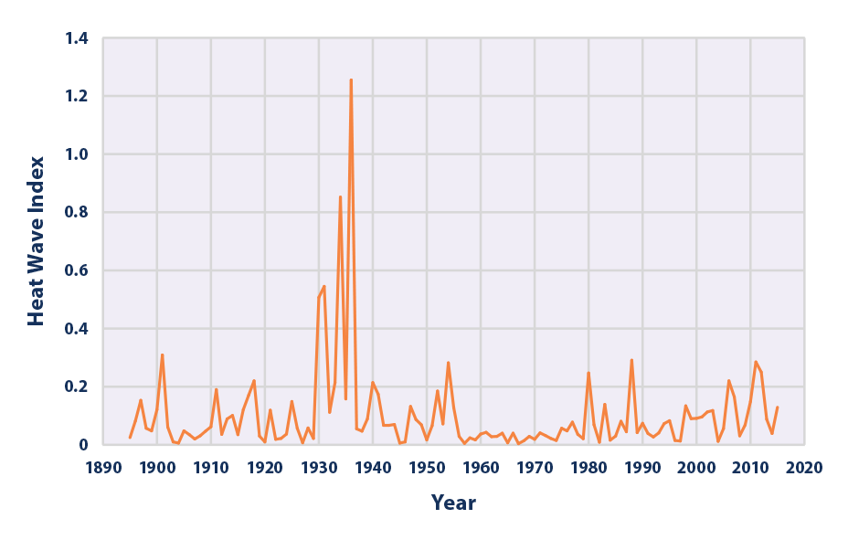
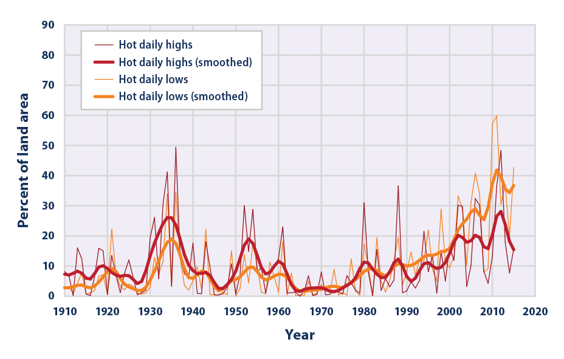
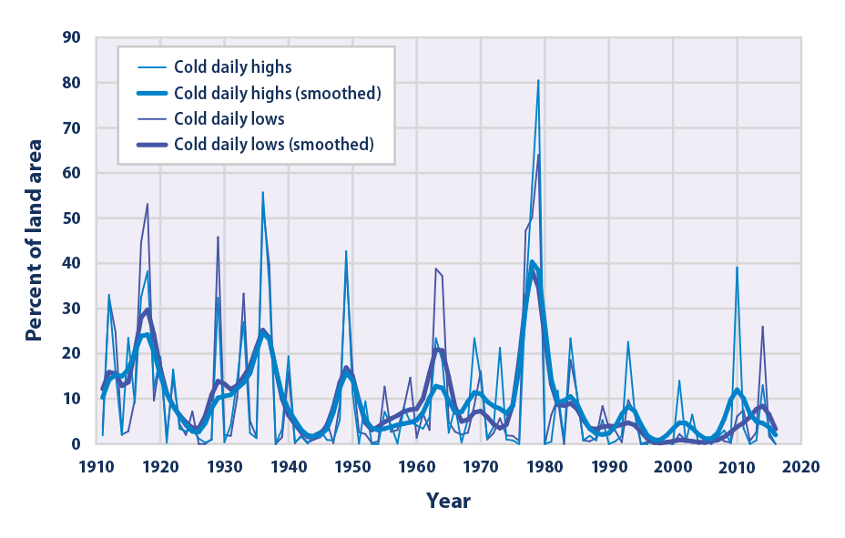
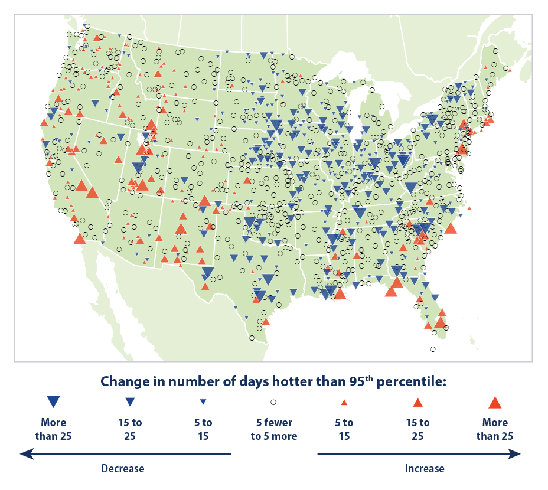
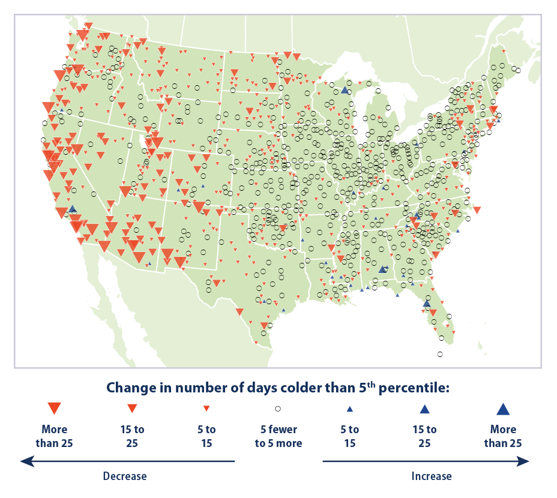
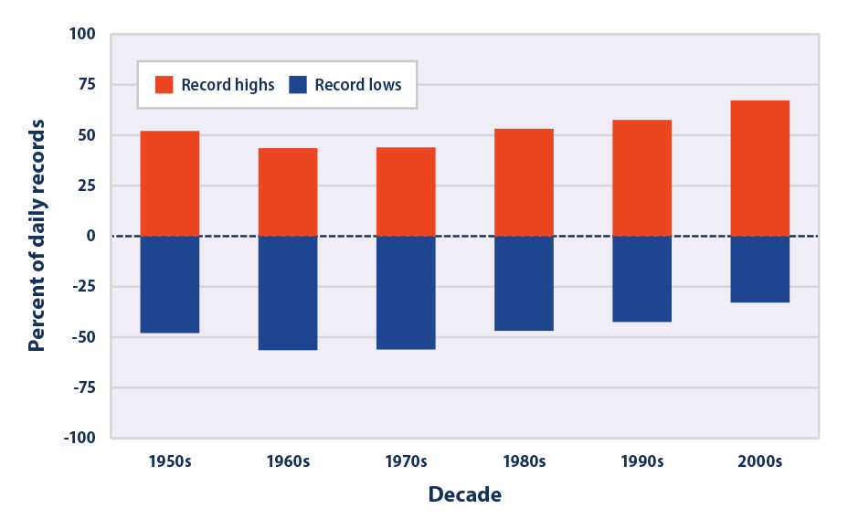

Climate Change Indicators: High and Low Temperatures
This indicator describes trends in unusually hot and cold temperatures across the United States.
- 
This figure shows the annual values of the U.S. Heat Wave Index from 1895 to 2015. These data cover the contiguous 48 states. Interpretation: An index value of 0.2 (for example) could mean that 20 percent of the country experienced one heat wave, 10 percent of the country experienced two heat waves, or some other combination of frequency and area resulted in this value.
Data source: Kunkel, 20166
Web update: August 2016 - 
This graph shows the percentage of the land area of the contiguous 48 states with unusually hot daily high and low temperatures during the months of June, July, and August. The thin lines represent individual years, while the thick lines show a nine-year weighted average. Red lines represent daily highs, while orange lines represent daily lows. The term “unusual” in this case is based on the long-term average conditions at each location.
Data source: NOAA, 20157
Web update: August 2016 - 
This graph shows the percentage of the land area of the contiguous 48 states with unusually cold daily high and low temperatures during the months of December, January, and February. The thin lines represent individual years, while the thick lines show a nine-year weighted average. Blue lines represent daily highs, while purple lines represent daily lows. The term “unusual” in this case is based on the long-term average conditions at each location.
Data source: NOAA, 20168
Web update: August 2016 - 

This map shows trends in unusually hot temperatures at individual weather stations that have operated consistently since 1948. In this case, the term “unusually hot” refers to a daily maximum temperature that is hotter than the 95th percentile temperature during the 1948–2015 period. Thus, the maximum temperature on a particular day at a particular station would be considered “unusually hot” if it falls within the warmest 5 percent of measurements at that station during the 1948–2015 period. The map shows changes in the total number of days per year that were hotter than the 95th percentile. Red upward-pointing symbols show where these unusually hot days are becoming more common. Blue downward-pointing symbols show where unusually hot days are becoming less common.
Data source: NOAA, 20169
Web update: August 2016 - 
This map shows trends in unusually cold temperatures at individual weather stations that have operated consistently since 1948. In this case, the term “unusually cold” refers to a daily minimum temperature that is colder than the 5th percentile temperature during the 1948–2015 period. Thus, the minimum temperature on a particular day at a particular station would be considered “unusually cold” if it falls within the coldest 5 percent of measurements at that station during the 1948–2015 period. The map shows changes in the total number of days per year that were colder than the 5th percentile. Blue upward-pointing symbols show where these unusually cold days are becoming more common. Red downward-pointing symbols show where unusually cold days are becoming less common.
Data source: NOAA, 201610
Web update: August 2016 - 
This figure shows the percentage of daily temperature records set at weather stations across the contiguous 48 states by decade. Record highs (red) are compared with record lows (blue).
Data source: Meehl et al., 200911
Web update: May 2014
Key Points
- Heat waves in the 1930s remain the most severe heat waves in the U.S. historical record (see Figure 1). The spike in Figure 1 reflects extreme, persistent heat waves in the Great Plains region during a period known as the “Dust Bowl.” Poor land use practices and many years of intense drought contributed to these heat waves by depleting soil moisture and reducing the moderating effects of evaporation.5
- Nationwide, unusually hot summer days (highs) have become more common over the last few decades (see Figure 2). The occurrence of unusually hot summer nights (lows) has increased at an even faster rate. This trend indicates less “cooling off” at night.
- The 20th century had many winters with widespread patterns of unusually low temperatures, including a particularly large spike in the late 1970s (see Figure 3). Since the 1980s, though, unusually cold winter temperatures have become less common—particularly very cold nights (lows).
- The two maps show where changes in the number of days with unusually hot (above the 95th percentile) and cold (below the 5th percentile) days have occurred since 1948. Unusually high temperatures have increased in the western United States and in several areas along the Gulf and Atlantic coasts, but decreased in much of the middle of the country (see Figure 4). The number of unusually cold days has generally decreased throughout the country, particularly in the western United States (see Figure 5).
- If the climate were completely stable, one might expect to see highs and lows each accounting for about 50 percent of the records set. Since the 1970s, however, record-setting daily high temperatures have become more common than record lows across the United States (see Figure 6). The most recent decade had twice as many record highs as record lows.
Background
Unusually hot or cold temperatures can result in prolonged extreme weather events like summer heat waves or winter cold spells. Heat waves can lead to illness and death, particularly among older adults, the very young, and other vulnerable populations (see the Heat-Related Deaths and Heat-Related Illnesses indicators).1 People can also die from exposure to extreme cold (hypothermia). In addition, prolonged exposure to excessive heat and cold can damage crops and injure or kill livestock. Extreme heat can lead to power outages as heavy demands for air conditioning strain the power grid, while extremely cold weather increases the need for heating fuel.
Record-setting daily temperatures, heat waves, and cold spells are a natural part of day-to-day variation in weather. As the Earth’s climate warms overall, however, heat waves are expected to become more frequent, longer, and more intense.2,3 Higher heat index values (which combine temperature and humidity to describe perceived temperature) are expected to increase discomfort and aggravate health issues. Conversely, cold spells are expected to decrease. In most locations, scientists expect daily minimum temperatures—which typically occur at night—to become warmer at a faster rate than daily maximum temperatures.4 This change will provide less opportunity to cool off and recover from daytime heat.
About the Indicator
This indicator examines trends in unusual temperatures from several perspectives:
- The size and frequency of prolonged heat wave events (Figure 1).
- Unusually hot summer temperatures and cold winter temperatures nationwide (Figures 2 and 3).
- The change in the number of days with unusually hot and cold temperatures at individual weather stations (Figures 4 and 5).
- Changes in record high and low temperatures (Figure 6).
The data come from thousands of weather stations across the United States. National patterns can be determined by dividing the country into a grid and examining the data for one station in each cell of the grid. This method ensures that the results are not biased toward regions that happen to have many stations close together.
Figure 1 shows the U.S. Annual Heat Wave Index, which tracks the occurrence of heat wave conditions across the contiguous 48 states from 1895 to 2015. While there is no universal definition of a heat wave, this index defines a heat wave as a period lasting at least four days with an average temperature that would only be expected to occur once every 10 years, based on the historical record. The index value for a given year depends on how often heat waves occur and how widespread they are.
Figures 2 and 3 show trends in the percentage of the country’s area experiencing unusually hot temperatures in the summer and unusually cold temperatures in the winter. These graphs are based on daily maximum temperatures, which usually occur during the day, and daily minimum temperatures, which usually occur at night. At each station, the recorded highs and lows are compared with the full set of historical records. After averaging over a particular month or season of interest, the coldest 10 percent of years are considered “unusually cold” and the warmest 10 percent are “unusually hot.” For example, if last year’s summer highs were the 10th warmest on record for a particular location with more than 100 years of data, that year’s summer highs would be considered unusually warm. Data are available from 1910 to 2015 for summer (June through August) and from 1911 to 2016 for winter (December of the previous year through February).
Figures 4 and 5 show how trends in unusually hot and cold daily temperatures throughout the year vary by location. These maps cover 1,100 weather stations that have operated since 1948. Figure 4 was created by reviewing all daily maximum temperatures from 1948 to 2015 and identifying the 95th percentile temperature (a temperature that one would only expect to exceed in five days out of every 100) at each station. Next, for each year, the total number of days with maximum temperatures higher than the 95th percentile (that is, unusually hot days) was determined. The map shows how the total number of unusually hot days per year at each station has changed over time. Figure 5 is similar except that it looks at unusually cold days, based on the 5th percentile of daily minimum temperatures.
Many people are familiar with record daily high and low temperatures, which are frequently mentioned in weather reports. Figure 6 depicts trends in these records by comparing the number of record-setting highs with the number of record-setting lows by decade. These data come from a set of weather stations that have collected data consistently since 1950.
Indicator Notes
Temperature data are less certain for the early part of the 20th century because fewer stations were operating at that time. In addition, measuring devices and methods have changed over time, and some stations have moved. The data have been adjusted to the extent possible to account for some of these influences and biases, however, and these uncertainties are not sufficient to change the fundamental trends shown in the figures.
Data Sources
The data for this indicator are based on measurements from weather stations managed by the National Oceanic and Atmospheric Administration. Figure 1 uses data from the National Weather Service Cooperative Observer Network. Figures 2 and 3 come from the U.S. Climate Extremes Index, which is based on a smaller group of long-term weather stations that are tracked by the National Centers for Environmental Information and referred to as the U.S. Historical Climatology Network. Figures 4 and 5 use data from a somewhat larger set of stations tracked by the National Centers for Environmental Information, known as the Global Historical Climatology Network. Figure 6 uses National Weather Service data processed by Meehl et al. (2009).12 All of these weather station records are available online at: www.ncdc.noaa.gov, and information about the Climate Extremes Index can be found at: www.ncdc.noaa.gov/extremes/cei.
Technical Documentation
References
1 Sarofim, M.C., S. Saha, M.D. Hawkins, D.M. Mills, J. Hess, R. Horton, P. Kinney, J. Schwartz, and A. St. Juliana. 2016. Chapter 2: Temperature-related death and illness. The impacts of climate change on human health in the United States: A scientific assessment. U.S. Global Change Research Program. https://health2016.globalchange.gov.
2 Melillo, J.M., T.C. Richmond, and G.W. Yohe (eds.). 2014. Climate change impacts in the United States: The third National Climate Assessment. U.S. Global Change Research Program. http://nca2014.globalchange.gov.
3 National Research Council. 2011. Climate stabilization targets: Emissions, concentrations, and impacts over decades to millennia. Washington, DC: National Academies Press.
4 IPCC (Intergovernmental Panel on Climate Change). 2013. Climate change 2013: The physical science basis. Working Group I contribution to the IPCC Fifth Assessment Report. Cambridge, United Kingdom: Cambridge University Press. www.ipcc.ch/report/ar5/wg1.
5 CCSP (U.S. Climate Change Science Program). 2008. Synthesis and Assessment Product 3.3: Weather and climate extremes in a changing climate. www.globalchange.gov/browse/reports/sap-33-weather-and-climate-extremes-changing-climate.
6 Kunkel, K. 2016. Updated version of Figure 2.3 in: CCSP (U.S. Climate Change Science Program). 2008. Synthesis and Assessment Product 3.3: Weather and climate extremes in a changing climate. www.globalchange.gov/browse/reports/sap-33-weather-and-climate-extremes-changing-climate.
7 NOAA (National Oceanic and Atmospheric Administration). 2015. U.S. Climate Extremes Index. Accessed December 2015. www.ncdc.noaa.gov/extremes/cei.
8 NOAA (National Oceanic and Atmospheric Administration). 2016. U.S. Climate Extremes Index. Accessed May 2016. www.ncdc.noaa.gov/extremes/cei.
9 NOAA (National Oceanic and Atmospheric Administration). 2016. National Centers for Environmental Information. Accessed May 2016. www.ncdc.noaa.gov.
10 NOAA (National Oceanic and Atmospheric Administration). 2016. National Centers for Environmental Information. Accessed May 2016. www.ncdc.noaa.gov.
11 Meehl, G. A., C. Tebaldi, G. Walton, D. Easterling, and L. McDaniel. 2009. Relative increase of record high maximum temperatures compared to record low minimum temperatures in the U.S. Geophys. Res. Lett. 36:L23701.
12 Meehl, G. A., C. Tebaldi, G. Walton, D. Easterling, and L. McDaniel. 2009. Relative increase of record high maximum temperatures compared to record low minimum temperatures in the U.S. Geophys. Res. Lett. 36:L23701.
Learn about other indicators in this section